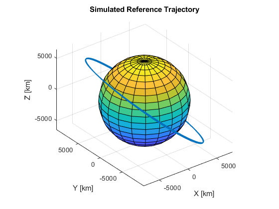
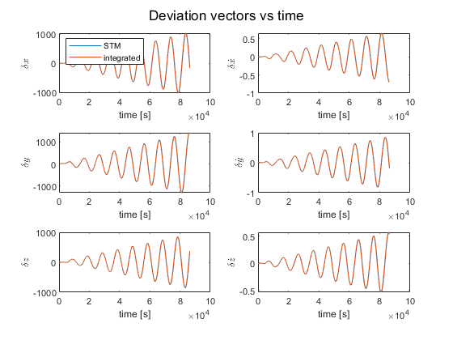
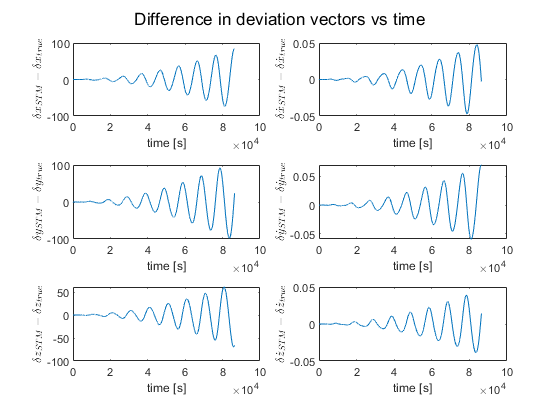
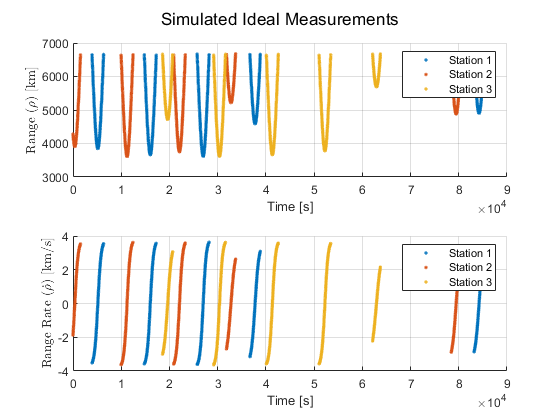
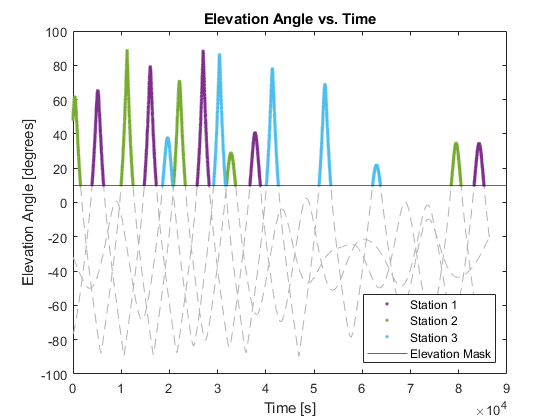
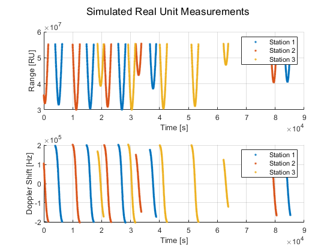
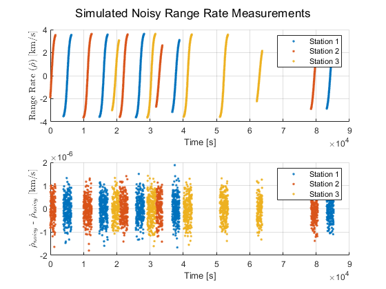

Contents
clear
clc
close all
addpath('C:\Users\marlo\MATLAB Drive\6080\StatOD')
addpath("C:\Users\marlo\MATLAB Drive\6010\RigidBodyKinematics-Matlab\Matlab")
load("HW1_truth_traj_mu_J2_with_STM.txt")
load("HW1_truth_J2_J3_acc.txt")
load("HW1_truth_range_htilde.txt")
load("HW1_truth_rangerate_htilde.txt")
a = 10000;
e = 0.001;
i = 40*pi/180;
OMEGA = 80*pi/180;
omega = 40*pi/180;
nu0 = 0;
mu = 398600.4415;
ae = 6378.0;
constants.ae = ae;
J2 = 0.0010826269;
J3 = 0;
C = [mu; J2; J3];
constants.omegaE = 7.2921158553e-5;
constants.theta0 = 122*pi/180;
c = 299792.458;
rp = a*(1-e);
r0_p = [rp; 0; 0];
vp = sqrt((1+e)/(1-e)*mu/a);
v0_p = [0; vp; 0];
PN = M3(omega)*M1(i)*M3(OMEGA);
r0_ECI = PN'*r0_p;
v0_ECI = PN'*v0_p;
S0 = [r0_ECI; v0_ECI; C; reshape(eye(9),[],1)];
T = 2*pi*sqrt(a^3/mu);
tspan = HW1_truth_traj_mu_J2_with_STM(:,1);
options = odeset('RelTol',1e-12,'AbsTol',1e-12);
[t1,S1] = ode45(@(t,S) orbitODE(t,S,constants), tspan, S0, options);
plotEarthOrbit(S1(:,1:3)', ae, "Simulated Reference Trajectory")
delta_S0 = [1;0;0;0;0.01;0];
perturbedS = [S0(1:6)+delta_S0; S0(7:end)];
[t2,S2] = ode45(@(t,S) orbitODE(t,S,constants), tspan, perturbedS, options);
true_deviation = S2(:,1:6)' - S1(:,1:6)';
flatSTM = S1(:,10:end);
STM = reshape(flatSTM',9,9,[]);
STM_deviation = zeros(9,length(t1));
STM_deviation(1:6,1) = delta_S0;
for i = 1:length(t1)-1
STM_deviation(:,i+1) = STM(:,:,i)*STM_deviation(:,1);
end
comparing_flat_STM = zeros(length(t1),36);
for j = 1:length(t1)
comparing_flat_STM(j,:) = reshape(STM(1:6,1:6,j),1,[]);
end
error = [S1(:,1:6), comparing_flat_STM] - HW1_truth_traj_mu_J2_with_STM(:,2:end);
max_intcol_error = max(error);
max_int_error = max(error, [], "all");
latlon_s1 = [-35.39833; 148.981944]*pi/180;
latlon_s2 = [40.427222; 355.749444]*pi/180;
latlon_s3 = [35.247164; 243.205]*pi/180;
r_s1_E = latlon2ECEF(ae, latlon_s1(1), latlon_s1(2));
r_s2_E = latlon2ECEF(ae, latlon_s2(1), latlon_s2(2));
r_s3_E = latlon2ECEF(ae, latlon_s3(1), latlon_s3(2));
[range_observations, rangeRate_observations, elevations_byStation, elevations_all] = simMeas(t1, S1, [r_s1_E,r_s2_E,r_s3_E], constants);
range_error = range_observations - HW1_truth_range_htilde;
rangeRate_error = rangeRate_observations - HW1_truth_rangerate_htilde;
max_rng_error = max(range_error, [], "all");
max_rngRt_error = max(rangeRate_error, [], "all");
idx1 = find(elevations_byStation(:,2)==1);
idx2 = find(elevations_byStation(:,2)==2);
idx3 = find(elevations_byStation(:,2)==3);
t_stn1 = range_observations(idx1, 1);
t_stn2 = range_observations(idx2, 1);
t_stn3 = range_observations(idx3, 1);
range = range_observations(:,3);
rangeRate = rangeRate_observations(:,3);
f_ref = 8.44*10^9;
f_shift = -2*rangeRate/c*f_ref;
RU = 221/749*range/c*f_ref;
noise = mvnrnd(0,(5e-7)^2, length(rangeRate_observations));
noisyRangeRate = rangeRate + noise;

Plotting
figure
subplot(3, 2, 1);
sgtitle('Deviation vectors vs time');
plot(t2, STM_deviation(1, :))
hold on
plot(t2, true_deviation(1,:));
xlabel('time [s]');
ylabel("$\delta x$", 'Interpreter', 'latex');
legend("STM", "integrated", 'Location', 'northwest')
subplot(3, 2, 3);
plot(t2, STM_deviation(2, :));
hold on
plot(t2, true_deviation(2,:));
xlabel('time [s]');
ylabel("$\delta y$", 'Interpreter', 'latex');
subplot(3, 2, 5);
plot(t2, STM_deviation(3, :));
hold on
plot(t2, true_deviation(3,:));
xlabel('time [s]');
ylabel("$\delta z$", 'Interpreter', 'latex');
subplot(3, 2, 2);
plot(t2, STM_deviation(4, :));
hold on
plot(t2, true_deviation(4,:));
xlabel('time [s]');
ylabel("$\delta \dot{x}$", 'Interpreter', 'latex');
subplot(3, 2, 4);
plot(t2, STM_deviation(5, :));
hold on
plot(t2, true_deviation(5,:));
xlabel('time [s]');
ylabel("$\delta \dot{y}$", 'Interpreter', 'latex');
subplot(3, 2, 6);
plot(t2, STM_deviation(6, :));
hold on
plot(t2, true_deviation(6,:));
xlabel('time [s]');
ylabel("$\delta \dot{z}$", 'Interpreter', 'latex');
figure
subplot(3, 2, 1);
sgtitle('Difference in deviation vectors vs time');
plot(t2, STM_deviation(1, :)-true_deviation(1,:));
xlabel('time [s]');
ylabel("$\delta x_{STM} - \delta x_{true}$", 'Interpreter', 'latex');
subplot(3, 2, 3);
plot(t2, STM_deviation(2, :)-true_deviation(2,:));
xlabel('time [s]');
ylabel("$\delta y_{STM} - \delta y_{true}$", 'Interpreter', 'latex');
subplot(3, 2, 5);
plot(t2, STM_deviation(3, :)-true_deviation(3,:));
xlabel('time [s]');
ylabel("$\delta z_{STM} - \delta z_{true}$", 'Interpreter', 'latex');
subplot(3, 2, 2);
plot(t2, STM_deviation(4, :)-true_deviation(4,:));
xlabel('time [s]');
ylabel("$\delta \dot{x}_{STM} - \delta \dot{x}_{true}$", 'Interpreter', 'latex');
subplot(3, 2, 4);
plot(t2, STM_deviation(5, :)-true_deviation(5,:));
xlabel('time [s]');
ylabel("$\delta \dot{y}_{STM} - \delta \dot{y}_{true}$", 'Interpreter', 'latex');
subplot(3, 2, 6);
plot(t2, STM_deviation(6, :)-true_deviation(6,:));
xlabel('time [s]');
ylabel("$\delta \dot{z}_{STM} - \delta \dot{z}_{true}$", 'Interpreter', 'latex');
figure
subplot(2,1,1)
sgtitle("Simulated Ideal Measurements")
scatter(t_stn1, range(idx1), '.')
hold on
scatter(t_stn2, range(idx2), '.')
scatter(t_stn3, range(idx3), '.')
legend('Station 1', 'Station 2', 'Station 3', 'Location', 'northeast')
xlabel('Time [s]')
ylabel("Range ($\rho$) [km]", 'Interpreter', 'latex')
grid on
subplot(2,1,2)
scatter(t_stn1, rangeRate(idx1), '.')
hold on
scatter(t_stn2, rangeRate(idx2), '.')
scatter(t_stn3, rangeRate(idx3), '.')
legend('Station 1', 'Station 2', 'Station 3', 'Location', 'northeast')
xlabel('Time [s]')
ylabel("Range Rate ($\dot{\rho}$) [km/s]", 'Interpreter', 'latex')
grid on
grayColor = [.7 .7 .7];
figure
plot(t1, elevations_all, '--', 'Color', grayColor)
hold on
scatter(elevations_byStation(idx1,1), elevations_byStation(idx1,3), '.')
scatter(elevations_byStation(idx2,1), elevations_byStation(idx2,3), '.')
scatter(elevations_byStation(idx3,1), elevations_byStation(idx3,3), '.')
title("Elevation Angle vs. Time")
yline(10)
legend('', '', '', 'Station 1', 'Station 2', 'Station 3', 'Elevation Mask', 'Location', 'southeast')
ylabel("Elevation Angle [degrees]")
xlabel("Time [s]")
figure
subplot(2,1,1)
sgtitle("Simulated Real Unit Measurements")
scatter(t_stn1, RU(idx1), '.')
hold on
scatter(t_stn2, RU(idx2), '.')
scatter(t_stn3, RU(idx3), '.')
legend('Station 1', 'Station 2', 'Station 3', 'Location', 'northeast')
xlabel('Time [s]')
ylabel("Range [RU]")
grid on
subplot(2,1,2)
scatter(t_stn1, f_shift(idx1), '.')
hold on
scatter(t_stn2, f_shift(idx2), '.')
scatter(t_stn3, f_shift(idx3), '.')
legend('Station 1', 'Station 2', 'Station 3', 'Location', 'northeast')
xlabel('Time [s]')
ylabel("Doppler Shift [Hz]")
grid on
figure
subplot(2,1,1)
sgtitle("Simulated Noisy Range Rate Measurements")
scatter(t_stn1, noisyRangeRate(idx1), '.')
hold on
scatter(t_stn2, noisyRangeRate(idx2), '.')
scatter(t_stn3, noisyRangeRate(idx3), '.')
legend('Station 1', 'Station 2', 'Station 3', 'Location', 'northeast')
xlabel('Time [s]')
ylabel("Range Rate ($\dot{\rho}$) [km/s]", 'Interpreter', 'latex')
grid on
subplot(2,1,2)
scatter(t_stn1, noisyRangeRate(idx1)-rangeRate(idx1), '.')
hold on
scatter(t_stn2, noisyRangeRate(idx2)-rangeRate(idx2), '.')
scatter(t_stn3, noisyRangeRate(idx3)-rangeRate(idx3), '.')
legend('Station 1', 'Station 2', 'Station 3', 'Location', 'northeast')
xlabel('Time [s]')
ylabel("$\dot{\rho}_{noisy}$ - $\dot{\rho}_{noisy}$ [km/s]", 'Interpreter', 'latex')
grid on
     